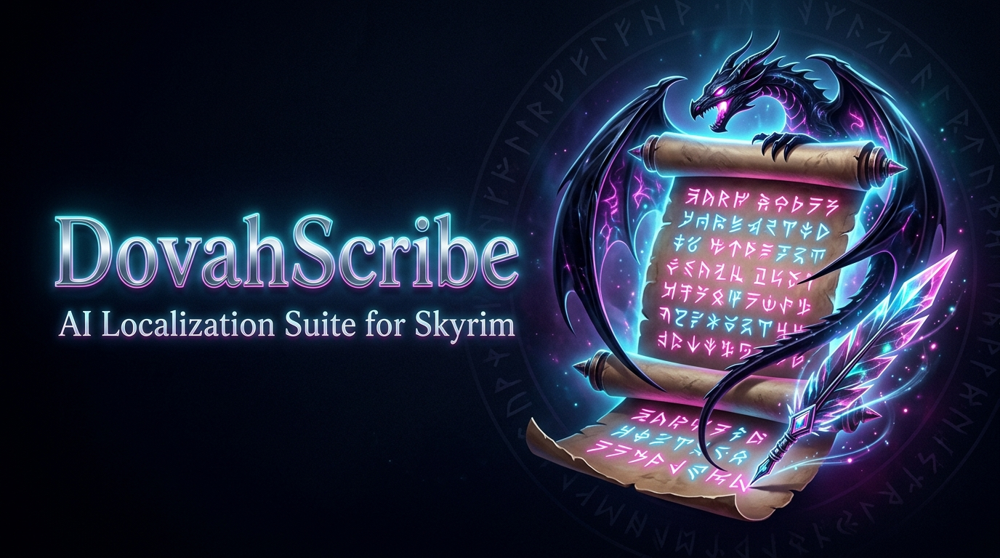

Загрузить локальный {mod}_review.json для проверки, редактирования или перевода.
{mod}_review.json
Управление базой ложных друзей (гонка ➔ раса, персонал ➔ посох) и автоочистка мода в 1 клик.
гонка ➔ раса
персонал ➔ посох
Экспортирует полный {mod}_review.json со всеми вашими правками, контекстом спикеров и статусами Quality Gate.
Генерирует чистый файл операций {mod}_ops.json для утилиты housecarl_apply и прошивки в .esp.
{mod}_ops.json
housecarl_apply
Показать абсолютно все записи мода без фильтрации по качеству.
Готовые строки, прошедшие проверку Quality Gate без ошибок.
Ложные друзья, спецсимволы, пустые строки или расхождения форматирования.
Непереведённый текст оригинала, ожидающий локализации.
Или нажмите для выбора файла из папки data/review/
data/review/